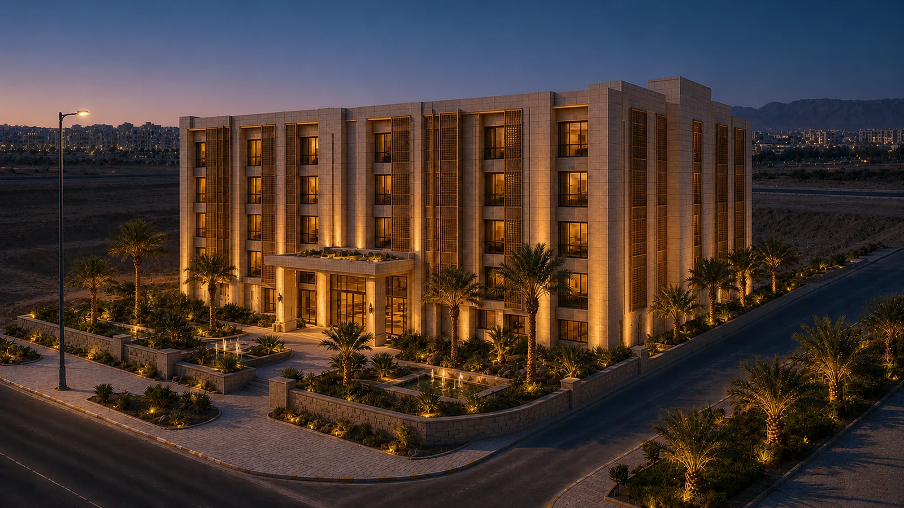

نفهم مشروعك
نتعرّف على أهدافك وجمهورك، ونحدد الخدمات والمحتوى المطلوب.
من أول نظرة، خلّ موقعك يحكي قيمة مشروعك.
نصمّم ونطوّر تجربة تشبه هويتك، وتسهّل على عميلك خطوته القادمة.
مواقع شركات. تجارب عقارية. متاجر إلكترونية.
أعمال فعلية، لكلٍّ منها حكايتها.
دار العز. كيناز. مدار الحكمة.
ابدأ بالتجربة، ثم تصفّح جميع المواقع والمتاجر.
تجارب من النماذج المحلية المنفذة. توضح أسلوب العرض والتفاعل، ولا تُقدّم توثيقًا هندسيًا.

تسلسل بصري من الموقع المحليمواقع شركات ومتاجر، مع نطاق العمل وحالة كل مشروع.
اسحب لاكتشاف بقية الأعمال ↔
نعرض نطاق دورنا في كل مشروع بوضوح. بعض الأعمال نماذج محلية، وتفاصيلها موضحة داخل المعرض.
اختر الخدمات التي تخدم مشروعك.
تصميم يعكس هويتك، ونطاق عمل نتفق عليه من البداية.
اسحب لاختيار الباقة المناسبة ↔
وضوح من البداية. نحدد هيكل المشروع والخدمات ضمن عرض العمل. تبدأ مدة التنفيذ بعد اكتمال المتطلبات. الدومين والاستضافة واشتراكات المنصات والقوالب والتطبيقات والخدمات المدفوعة منفصلة. تفعيل الدفع والشحن يخضع لحساباتك وموافقة مزودي الخدمة.
نتعرّف على أهدافك وجمهورك، ونحدد الخدمات والمحتوى المطلوب.
نرتّب رحلة عميلك، ونصنع واجهة تستمد شخصيتها من هويتك.
ننفذ الخدمات المتفق عليها، ونشاركك النسخة للمراجعة والتحسين.
نراجع التجاوب والتجربة، ونسلّمك مشروعك مع الدعم المحدد بباقتك.
تفاصيل تساعدك تختار بثقة.
ابدأ بالهدف: حضور تعريفي لعلامتك، إدارة محتوى وأعمال، أم متجر لبيع المنتجات؟ نراجع متطلباتك ونوضح الخدمات المناسبة ونطاق التنفيذ قبل البدء.
نطوّر موقع ووردبريس بتصميم مخصص وخدمات متفق عليها، ويمكن أن يكون متجرًا في باقة الصدارة. باقة سلة تبني وتخصص تجربة متجرك داخل منصة سلة وبحسب إمكانات اشتراكك؛ لا تتضمن بناء منصة سلة نفسها.
بعد اعتماد نطاق العمل واستلام المحتوى والصور والهوية والصلاحيات المطلوبة. تأخر المتطلبات أو اعتماد المراجعات قد يغيّر الموعد وفق الاتفاق.
السعر المقترح يخص التصميم والتنفيذ ضمن الخدمات الموضحة. الدومين والاستضافة واشتراك سلة والقوالب والتطبيقات المدفوعة ورسوم مزودي الدفع تُحسب بشكل منفصل. تتحدد الضريبة، إن انطبقت، في عرض السعر النهائي.
نعم. نحدد تكلفة ومدة الخدمات أو التكاملات الإضافية قبل تنفيذها، ونثبت نطاق العمل في عرض مشروعك.
شاركنا فكرتك، ونمهّد لك الخطوة التي تليق بها.
نراجع احتياجك، ونحدد نطاق العمل قبل البدء.